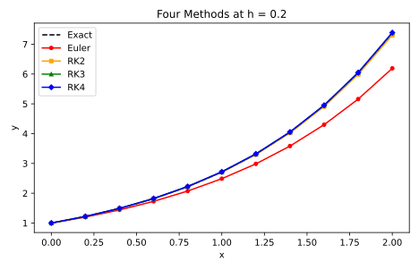
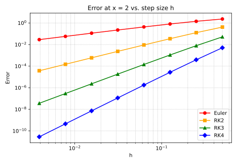
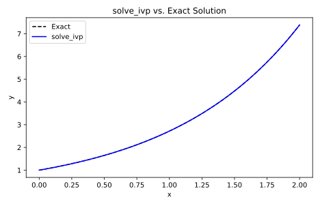

def rk4_step(f, x, y, h):
k1 = f(x, y)
k2 = f(x + h/2, y + (h/2)*k1)
k3 = f(x + h/2, y + (h/2)*k2)
k4 = f(x + h, y + h*k3)
return y + (h/6)*(k1 + 2*k2 + 2*k3 + k4)8 RK4 in Python
This chapter translates the classical RK4 method derived in Chapter 7 into executable Python. We implement the method from scratch, verify it against the known solution \(e^x\), compare it side by side with Euler’s method, RK2, and RK3, examine why four function evaluations per step deliver such disproportionate accuracy per unit of work, and close by showing how SciPy’s built-in solve_ivp relates to the method we have built.
8.1 Implementing RK4 from Scratch
The classical RK4 method assigns the four slope estimates weights \(1/6\), \(1/3\), \(1/3\), \(1/6\), sampling at the start, two midpoints, and the end of each step. Chapter 7 derived these weights by forcing the Taylor expansion of the numerical increment to match the exact solution through order \(h^4\). Here we translate those coefficients directly into Python.
The function takes the slope function f, the current state \((x, y)\), and the step size h, and returns the next \(y\) value. To integrate over an interval we iterate rk4_step, carrying both \(x\) and \(y\) forward together as a pair. The runner returns every intermediate state, giving the complete solution trajectory.
import numpy as np
def rk4_run(f, x0, y0, x_end, h):
n_steps = round((x_end - x0) / h)
xs = [x0]; ys = [y0]
for _ in range(n_steps):
ys.append(rk4_step(f, xs[-1], ys[-1], h))
xs.append(xs[-1] + h)
return np.array(xs), np.array(ys)We reload the test problem established in Chapter 2.5. Every numerical chapter reloads these definitions so each notebook is self-contained.
def f(x, y):
return y
def exact_solution(x):
return np.exp(x)
x0 = 0.0; y0 = 1.0; x_end = 2.0Run rk4_run with step size \(h = 0.5\), producing five points on \([0, 2]\), and display each alongside the exact value.
import pandas as pd
xs_s, ys_s = rk4_run(f, x0, y0, x_end, 0.5)
pd.DataFrame({
"x": xs_s,
"RK4": ys_s,
"Exact": exact_solution(xs_s),
"Error": np.abs(ys_s - exact_solution(xs_s)),
})| x | RK4 | Exact | Error | |
|---|---|---|---|---|
| 0 | 0.0 | 1.000000 | 1.000000 | 0.000000 |
| 1 | 0.5 | 1.648438 | 1.648721 | 0.000284 |
| 2 | 1.0 | 2.717346 | 2.718282 | 0.000936 |
| 3 | 1.5 | 4.479375 | 4.481689 | 0.002314 |
| 4 | 2.0 | 7.383970 | 7.389056 | 0.005086 |
8.2 Verifying Correctness Against Known Solutions
A single run at one step size confirms the method produces numbers close to the exact solution, but it does not confirm the order. To verify the order we show that halving \(h\) reduces the error by a factor of \(2^4 = 16\).
h_values = [0.5, 0.25, 0.125, 0.0625, 0.03125]
errors = [abs(rk4_run(f, x0, y0, x_end, hv)[1][-1] - exact_solution(x_end))
for hv in h_values]Display \(h\), the RK4 approximation at \(x = 2\), the exact value \(e^2\), and the absolute error.
final_vals = [rk4_run(f, x0, y0, x_end, hv)[1][-1] for hv in h_values]
pd.DataFrame({
"h": h_values,
"RK4 at x=2": final_vals,
"Exact": [exact_solution(x_end)] * len(h_values),
"Error": errors,
})| h | RK4 at x=2 | Exact | Error | |
|---|---|---|---|---|
| 0 | 0.50000 | 7.383970 | 7.389056 | 5.085775e-03 |
| 1 | 0.25000 | 7.388665 | 7.389056 | 3.908254e-04 |
| 2 | 0.12500 | 7.389029 | 7.389056 | 2.709604e-05 |
| 3 | 0.06250 | 7.389054 | 7.389056 | 1.783837e-06 |
| 4 | 0.03125 | 7.389056 | 7.389056 | 1.144280e-07 |
The ratio of consecutive errors is the most direct check on order.
[errors[i] / errors[i + 1] for i in range(len(errors) - 1)][np.float64(13.012909421646564),
np.float64(14.423708413344503),
np.float64(15.189752044947813),
np.float64(15.589164877329173)]Each ratio should be close to \(16\). Small deviations appear at very small \(h\) where floating-point rounding competes with the truncation error. This confirms that the method derived symbolically in Chapter 7 behaves exactly as the derivation predicted.
8.3 Euler, RK2, RK3, and RK4 Side by Side
Chapters 4 through 7 derived each method separately. Here we collect all four into a single comparison. We define each lower-order step function with the same interface as rk4_step and then use a common runner so that only the step function changes between runs.
def euler_step(f, x, y, h):
return y + h*f(x, y)The Midpoint Method (RK2 with \(b_2 = 1\) and \(c_2 = 1/2\), derived in Chapter 5.6) samples \(f\) once at the midpoint of the interval.
def rk2_step(f, x, y, h):
k1 = f(x, y)
k2 = f(x + h/2, y + (h/2)*k1)
return y + h*k2Kutta’s 1901 third-order method (derived in Chapter 6.5) uses \(c = \{0, 1/2, 1\}\) and \(b = \{1/6, 2/3, 1/6\}\).
def rk3_step(f, x, y, h):
k1 = f(x, y)
k2 = f(x + h/2, y + (h/2)*k1)
k3 = f(x + h, y - h*k1 + 2*h*k2)
return y + (h/6)*(k1 + 4*k2 + k3)A single runner accepts any step function and returns the complete trajectory as \(x\) and \(y\) arrays.
def method_run(step_fn, f, x0, y0, x_end, h):
n_steps = round((x_end - x0) / h)
xs = [x0]; ys = [y0]
for _ in range(n_steps):
ys.append(step_fn(f, xs[-1], ys[-1], h))
xs.append(xs[-1] + h)
return np.array(xs), np.array(ys)Run all four methods at \(h = 0.2\) on \([0, 2]\).
h_cmp = 0.2
xs_e, ys_e = method_run(euler_step, f, x0, y0, x_end, h_cmp)
xs_2, ys_2 = method_run(rk2_step, f, x0, y0, x_end, h_cmp)
xs_3, ys_3 = method_run(rk3_step, f, x0, y0, x_end, h_cmp)
xs_4, ys_4 = method_run(rk4_step, f, x0, y0, x_end, h_cmp)Plot all four trajectories against the exact solution.
import matplotlib.pyplot as plt
xc = np.linspace(x0, x_end, 200)
fig, ax = plt.subplots(figsize=(6.5, 4.2))
ax.plot(xc, exact_solution(xc), color='black', linestyle='--', label='Exact')
ax.plot(xs_e, ys_e, color='red', marker='o', markersize=4, label='Euler')
ax.plot(xs_2, ys_2, color='orange', marker='s', markersize=4, label='RK2')
ax.plot(xs_3, ys_3, color='green', marker='^', markersize=4, label='RK3')
ax.plot(xs_4, ys_4, color='blue', marker='D', markersize=4, label='RK4')
ax.set_xlabel('x'); ax.set_ylabel('y')
ax.set_title('Four Methods at h = 0.2')
ax.legend()
fig.tight_layout()
fig.savefig("08_RK4_in_Python/four-methods.pdf")
fig.savefig("08_RK4_in_Python/four-methods.svg")
plt.close(fig)
8.4 Cost vs. Accuracy: Function Evaluations per Step
Each step of each method calls \(f\) a fixed number of times: Euler once, RK2 twice, RK3 three times, RK4 four times. The question is whether the extra evaluations are worth the cost.
pd.DataFrame({
"Method": ["Euler", "RK2", "RK3", "RK4"],
"f calls per step": [1, 2, 3, 4],
"Order": ["O(h)", "O(h^2)", "O(h^3)", "O(h^4)"],
})| Method | f calls per step | Order | |
|---|---|---|---|
| 0 | Euler | 1 | O(h) |
| 1 | RK2 | 2 | O(h^2) |
| 2 | RK3 | 3 | O(h^3) |
| 3 | RK4 | 4 | O(h^4) |
For a fair comparison we hold the total number of \(f\) evaluations fixed at 24 over \([0, 2]\). Euler takes 24 steps of size \(h = 1/12\); RK4 takes 6 steps of size \(h = 1/3\). Both perform exactly 24 evaluations of \(f\), so the comparison measures accuracy per unit of computational work.
total_evals = 24
def h_for(order):
return (x_end - x0) * order / total_evals
def err_at_2(step_fn, h):
return abs(method_run(step_fn, f, x0, y0, x_end, h)[1][-1]
- exact_solution(x_end))
methods = [("Euler", euler_step, 1),
("RK2", rk2_step, 2),
("RK3", rk3_step, 3),
("RK4", rk4_step, 4)]
pd.DataFrame({
"Method": [m[0] for m in methods],
"h": [h_for(m[2]) for m in methods],
"Steps": [total_evals // m[2] for m in methods],
"Error (24 total evals)":
[f"{err_at_2(m[1], h_for(m[2])):.4e}" for m in methods],
})| Method | h | Steps | Error (24 total evals) | |
|---|---|---|---|---|
| 0 | Euler | 0.083333 | 24 | 5.6110e-01 |
| 1 | RK2 | 0.166667 | 12 | 6.0184e-02 |
| 2 | RK3 | 0.250000 | 8 | 7.8801e-03 |
| 3 | RK4 | 0.333333 | 6 | 1.1529e-03 |
RK4’s error is many orders of magnitude smaller than Euler’s even though both performed exactly 24 evaluations of \(f\). The four slopes are combined in a carefully weighted average that extracts far more accuracy per evaluation than a single slope ever could.
8.5 Error Convergence: Confirming Fourth-Order Behavior Numerically
The ratio test in the previous section showed one snapshot. A more complete picture comes from plotting the error over a range of step sizes on a log-log scale. A method of order \(p\) satisfies
\[E(h) \approx C \cdot h^p\]
so on a log-log plot the error appears as a straight line with slope \(p\). We compute the error at \(x = 2\) for all four methods over a sequence of step sizes, then both plot the curves and fit the slopes.
h_list = [2.0**(-k) for k in range(1, 9)]
def err_curve(step_fn):
return [abs(method_run(step_fn, f, x0, y0, x_end, h)[1][-1]
- exact_solution(x_end))
for h in h_list]
e_euler = err_curve(euler_step)
e_rk2 = err_curve(rk2_step)
e_rk3 = err_curve(rk3_step)
e_rk4 = err_curve(rk4_step)Plot the four error curves on a log-log scale.
fig, ax = plt.subplots(figsize=(6.5, 4.5))
ax.loglog(h_list, e_euler, color='red', marker='o', label='Euler')
ax.loglog(h_list, e_rk2, color='orange', marker='s', label='RK2')
ax.loglog(h_list, e_rk3, color='green', marker='^', label='RK3')
ax.loglog(h_list, e_rk4, color='blue', marker='D', label='RK4')
ax.set_xlabel('h'); ax.set_ylabel('Error')
ax.set_title('Error at x = 2 vs. step size h')
ax.legend()
ax.grid(True, which='both', linestyle=':')
fig.tight_layout()
fig.savefig("08_RK4_in_Python/loglog.pdf")
fig.savefig("08_RK4_in_Python/loglog.svg")
plt.close(fig)
To read the slopes numerically we fit \(\log(\text{Error}) = p \cdot \log(h) + c\) for each method. The slope \(p\) is the order.
def slope_of(err_list):
log_h = np.log(h_list)
log_e = np.log(err_list)
# numpy.polyfit returns coefficients highest-power first; deg 1 -> [slope, intercept]
return np.polyfit(log_h, log_e, 1)[0]
[slope_of(e_euler), slope_of(e_rk2), slope_of(e_rk3), slope_of(e_rk4)][np.float64(0.9169598197712014),
np.float64(1.9323715551295049),
np.float64(2.93084628348305),
np.float64(3.928122197195233)]The fitted slopes should be approximately \(1, 2, 3, 4\), confirming that each method achieves exactly the order the derivation promised. The log-log plot makes this visible: the RK4 line is far steeper than the Euler line, meaning RK4’s error shrinks much faster as \(h\) decreases.
8.6 How SciPy’s solve_ivp Relates to What We Just Built
solve_ivp is SciPy’s built-in ODE solver. For non-stiff problems it uses an adaptive Runge-Kutta method by default, specifically the Dormand-Prince pair (RK45), which embeds both a 4th-order and a 5th-order estimate in a single pass of 6 stage evaluations. The two estimates are compared to control the step size automatically: the solver takes smaller steps where the solution changes rapidly.
from scipy.integrate import solve_ivp
sol = solve_ivp(lambda x, y: y, [0, 2], [1], dense_output=True,
method='RK45', rtol=1e-8, atol=1e-10)
def y_nd(x):
return sol.sol(x)[0]xc = np.linspace(x0, x_end, 200)
fig, ax = plt.subplots(figsize=(6.5, 4.2))
ax.plot(xc, exact_solution(xc), color='black', linestyle='--', label='Exact')
ax.plot(xc, [y_nd(xv) for xv in xc], color='blue', label='solve_ivp')
ax.set_xlabel('x'); ax.set_ylabel('y')
ax.set_title('solve_ivp vs. Exact Solution')
ax.legend()
fig.tight_layout()
fig.savefig("08_RK4_in_Python/ndsolve.pdf")
fig.savefig("08_RK4_in_Python/ndsolve.svg")
plt.close(fig)
solve_ivp (blue) tracks the exact solution to within machine precision.Compare solve_ivp’s error at \(x = 2\) with our fixed-step RK4 at \(h = 0.2\).
abs(y_nd(2.0) - exact_solution(2.0))np.float64(2.8043790401000024e-08)abs(rk4_run(f, x0, y0, x_end, 0.2)[1][-1] - exact_solution(2.0))np.float64(0.00016685727119103433)solve_ivp’s error is typically many orders of magnitude smaller. It achieves this not by using a fundamentally different method but by using a smarter strategy: the same weighted-average idea, applied at a step size that adjusts automatically to meet a precision target. Understanding the derivation of RK4 is the prerequisite for understanding why adaptive solvers work and where their guarantees come from.